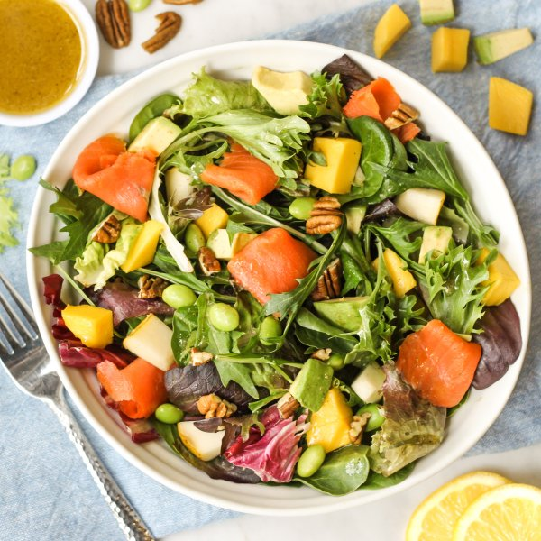

Smoked Salmon Salad with Edamame, Mango, Pear, Avocado & Pecans

Prep Time
30 min
Nutrition (per serving)
658.3 kcalCalories
25.8 gProtein
61.8 gCarbs
39.4 gFat
Full nutrition table
| Calories | 658.3 kcal |
| Total fat | 39.4 g |
| Saturated fat | 5.2 g |
| Trans fat | 0 g |
| Cholesterol | 13 mg |
| Sodium | 1167 mg |
| Carbohydrates | 61.8 g |
| Fiber | 19.1 g |
| Sugars | 37.5 g |
| Protein | 25.8 g |
| Potassium | 1601.4 mg |
| Calcium | 145 mg |
| Iron | 4.6 mg |
| Vitamin A | 501 IU |
| Vitamin C | 91.9 mg |
| Vitamin D | 0 IU |
Cookware
Ingredients
- 2avocados
- 2 cupsedamame
- 1lemon
- 2mangoes
- 2pears
- ½ cuppecan halves
- 2 (4 oz) pkgssmoked salmon
- 2 (5 oz) pkgsspring mix (mixed greens)
- black pepper
- Dijon mustard
- extra virgin olive oil
- pure maple syrup
- salt
- white wine vinegar
Steps
- Wash and dry the fresh produce. (Skip the mixed greens if they came pre-washed.)1 lemon
2 mangoes
2 avocados
2 pears
2 (5 oz) pkgs spring mix (mixed greens) - Place edamame in the colander and rinse under hot, running water (from the tap) to defrost; set aside to drain.2 cups edamame
- Juice lemon into a large bowl. Add oil, vinegar, Dijon, maple syrup, salt, and pepper; whisk to combine the dressing.2 tbsp extra virgin olive oil
4 tsp white wine vinegar
2 tsp Dijon mustard
2 tsp pure maple syrup
1 tsp salt
½ tsp black pepper - Peel mangoes and slice flesh away from the pit, starting with the flat sides; medium dice and add to the bowl with the dressing.
- Halve and pit avocados; slice crosswise while still in the skin and scoop out with a spoon. Add to the bowl.
- Quarter, core, and medium dice pears; add to the bowl.
- Roughly chop pecans and add to the bowl.½ cup pecans, dry roasted
- Chop or tear salmon into bite-sized pieces and add to the bowl.2 (4 oz) pkgs smoked salmon
- Add mixed greens and edamame to the bowl; toss to combine the salad.
- To serve, divide salad between plates or bowls and enjoy!